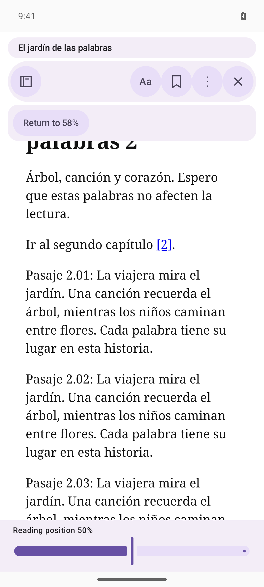
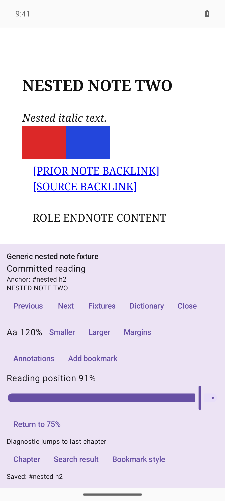
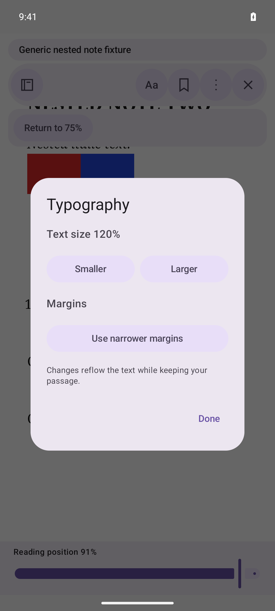
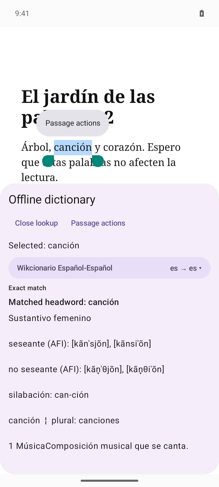
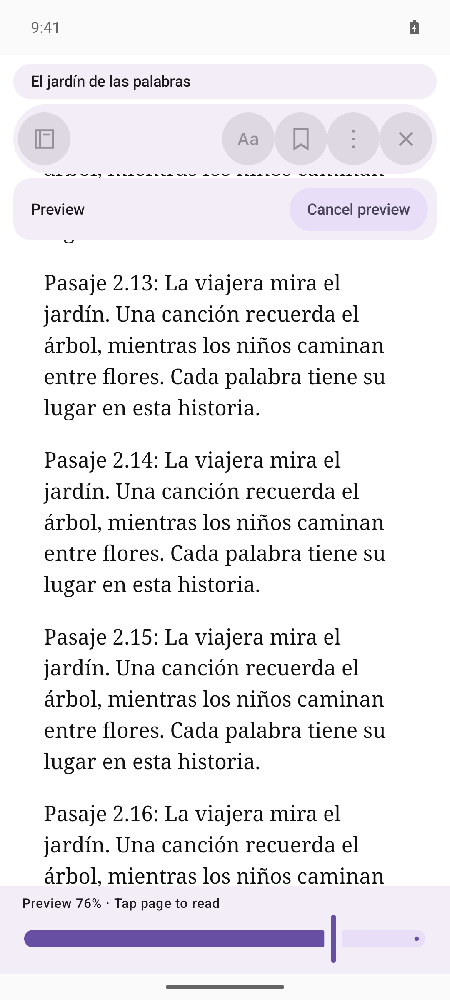

UI pass ready for review Actual Android screenshots. Top options, slider-only bottom, Material 3 Expressive.

Library, Aa, bookmark and overflow at the top. Return stays above the page.

Previous layout mixed options, diagnostics and slider in one bottom panel.

Typography opens separately. Opening the dialog leaves the saved passage unchanged.

Hold a word for immediate lookup. The definition comes before import tools; sources use a dropdown.

Preview keeps the committed position. Cancel is at the top; a page tap still commits.
Build and focused dictionary checks passed. Preview/cancel, Return, reflow and restart were exercised. Compatibility gate remains failed on #9 and #10. Owner interaction review is still pending.